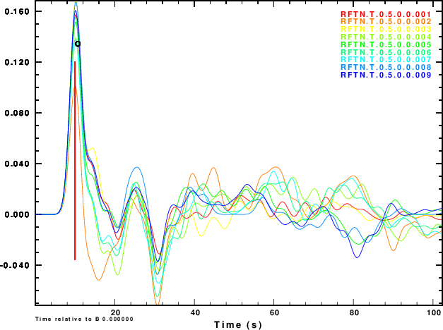

R and Z noise are independent
R noise is Z noise
R noise is negative of Z noise

R noise is Hilbert transform of Z noise
The incentive for this tutorial arose when a student asked about
the error in a receiver function. The teleseismic P-wave receiver
function is a filter which converts the vertical component of the
P wave to the radial component. Typically this filter is defined
as that which converts the observed P-wave on the vertical
component to a low-pass filtered P-wave on the radial component.
This low pass operation is usually defined in terms of a Gaussian
function
H(f) = exp [ - ]If the filter determined from the data confidently predicts the low-pass filtered radial component, and if the filter satisfies elementary elastic wave theory, then the resultant receiver function can be used constrain Earth structure near the seismograph station.
This exercise is contained in the gzip'd tar file RFTNNOISE.tgz
After downloading execute the following commands:
gunzip -c RFTNNOISE.tgz | tar xf -
cd RFTNNOISE.dist/src
make all
cd ..
This procedure creates the directory structure: RFTNNOISE.dist/
RFTNNOISE.dist/DOCLEANUP Script to clean up temporary files
RFTNNOISE.dist/DOIT Simulation script
RFTNNOISE.dist/DOPLOT Script to create PNG graphics
RFTNNOISE.dist/Models/ Directory having models for making synthetics
RFTNNOISE.dist/src/
RFTNNOISE.dist/src/Makefile
RFTNNOISE.dist/src/noisemodel.h
RFTNNOISE.dist/src/sacnoise.c
RFTNNOISE.dist/src/sacsubc.c
RFTNNOISE.dist/src/sacsubc.h
RFTNNOISE.dist/Models/CUS.mod
RFTNNOISE.dist/Models/tak135sph.mod
As a result of the make all the executable sacnoise
is created in the src directory.DOIT is the driving script for the simulations. It
is bash shell script with all controls at the top of the
file. To keep the code manageable, the bash functions
are used. These appear first in the file. The logic of the
simulation is incorporated in these lines:
############################################################################
# main processing
############################################################################
#####
# clean up from previous runs
#####
cleanup
#####
# initialize the random number sequence
#####
init
#####
# make the teleseism signal
# and then get the receiver function from the noisefree signal
#####
maketeleseism
dorftnnonoise
#####
# add noise to the Z and R components for the teleseismic P wave
# and compute receiver functions
#####
SIM=00
while read SURD
do
SIM=`echo $SIM | awk '{printf "%3.3d", $1 + 1 }' `
domakenoise
dorftnnoise
done < surd.tmp
#####
# now stack the noisy P signals to see if they are improved
# stack the RFTNs from the noisy signal
#####
dostack
The comments indicate what each function does. init() creates
NSIM random numbers between 0 and 9999 in the file surd.tmp,
with one entry per line. maketeleseism uses hudson96 to
make the teleseismic P wave signal on the Z and R components. The
amplitude of the synthetic depends on Mw and on a source duration
which is a function of Mw. dorftnnonoise creates the
receiver functions for 0.5,
1.0 and 2.5.Figure 1 gives the ground velocity (m/s) for an Mw=6.0 soruce at
a depth of 20 km at a distance of 40 degrees from the receiver.
The receiver is at an azimuth of 45 degrees from the source. The
fault plane parameters are strike= 80, dip = 80 and rake = 10. In
this figure T.Z is the vertical component motion and T.R
is the radial motion, 1.0.sac.1354 is the ground noise
in m/s that is used with the he Z component, and 2.0.sac.1354
is the ground noise for the radial component. For this
simulation NOISE=1 so that the noise on the two components
is the same.
Figure 2 shows the simulated noisy Z and R waveforms for each of the of the nine noise sequences and for the four choices of the NOISE parameter.
| Simulation | Z component | R component |
R and Z noise are independent |
||
R noise is Z noise |
||
R noise is negative of Z noise≈ |
||
R noise is Hilbert transform of Z noise≈ |
||
|
|
||
|---|---|---|
| Simulation | Normalized stack |
R and Z noise are independent |
|
R noise is Z noise |
|
R noise is negative of Z noise |
|
R noise is Hilbert transform of Z noise |
|
|
|
|
|---|---|
The next exercise is to compute the receiver functions using the iterative deconvolution program saciterd of Ligorria and Ammon. These are shown in Figure 4 for the three values of .
| Simulation | α = 0.5 | α = 1.0 | α =2.5 |
R and Z noise are independent |
|||
R noise is Z noise |
|||
R noise is negative of Z noise |
 | |
|
R noise is Hilbert transform of Z noise |
|||
|
|
|||
Finally we compare normalized stacked receiver functions to the those of the noise-free signals in Figure 5.
| Simulation | α = 0.5 | α = 1.0 | α =2.5 |
R and Z noise are independent |
|||
R noise is Z noise |
|||
R noise is negative of Z noise |
|||
R noise is Hilbert transform of Z noise |
|||
|
|
|||
|---|---|---|---|
Several objectives of this exercise have been met. First an
example is provided of how to add realistic noise to synthetics
and then to processess thos synthetics. In this case we focus on
teleseismic P-wave receiver functions.
Figure 4 shows that noise can affect the determinationof the
receiver function. The effect is strongest for α = 0.5 and less
noticable for α = 2.5. So waht use the lower value. Well other
simulations of the effect of deep sediments at the reciever
indicate that these are not as storng for the lower value of α.
One way of thinking about this is that the smaller alpha
emphasizes the lower frequencies, for which the Earth starts
to look mmore like a halfspace.
We slao see that the effect of the noise in the inividual
receiver functions of Figure 4 and on the stacks of Figure 5 are
not so bad if the nosie is the same on the vertical and radial
components or if the two noises are holber transforms of each
other. Ammon (199X) showed the the First bump of the receiver
function descroibes the conversion of incident P on the vertical
to the radial, while later features refpresent the effect of the
conversion of the S wave on the vertical to that on the radial.
For NOISE=1, he motion is P-wave motion. For NOISE=3 the
motion may be Rayleigh like. Now with real data, the direction of
plane wave nosie is no know, and even though it may be due to a
P-wave, if it is incident from a direction other than the back
azimuth, then there will be some of the NOISE=2 in the data.
Although the amplitudes are sensitive to the noise, the timing of
major pahses is not as sensitive.
I would expect that the results would be worse, if the PVAL is a
more reasonable value, such as 0.2 for an Mw=6. This
simulation reflects real expeience, in that one needs a lot of
large earthquake eata to make a good receiver function.